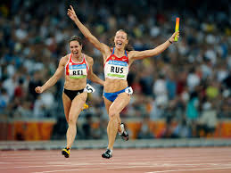

|
|
Juegos olímpicos |
|
|
|
 |
Acerca de los Juegos OlímpicosLos Juegos Olímpicos del griego Ολυμπιακοί αγώνες son las mayores competiciones deportivas internacionales complejas que se celebran cada cuatro años bajo los auspicios del Comité Olímpico Internacional. La medalla ganada en los Juegos Olímpicos se considera uno de los mayores logros deportivos. |
|
La tradición de albergar los Juegos Olímpicos, que existía en la antigua Grecia, se originó como parte de un culto religioso. Los juegos se han celebrado desde el 776 a. C. mi. Hasta el 393 d. C. a. C., se celebraron un total de 293 Olimpiadas en Olimpia, que se consideraba un lugar sagrado entre los griegos. El nombre de los juegos también se originó en Olimpia. |
|
Unos días después de los Juegos Olímpicos, los Juegos Paralímpicos para personas con discapacidad se celebran en las mismas instalaciones deportivas. |
| Numero de OJ | Año | 1er puesto | 2no puesto | 3er puesto |
| I | 1896 | EE.UU | Reino de Grecia | Imperio Alemán |
| II | 1900 | Francia | Imperio Alemán | EE.UU |
| III | 1904 | EE.UU | Imperio Alemán | Cuba |
| IV | 1908 | Reino Unido | EE.UU | Suecia |
| V | 1912 | EE.UU | Suecia | Reino Unido |
| Primera Guerra Mundial | ||||
| VII | 1920 | EE.UU | Suecia | Reino Unido |
| VIII | 1924 | EE.UU | Finlandia | Francia |
| IX | 1928 | EE.UU | República de Allman | Finlandia |
| Х | 1932 | EE.UU | Reino de Italia | France |
| XI | 1936 | Alemania nazi | EE.UU | Reino de Hungría |
| Segunda Guerra Mundial | ||||
| Segunda Guerra Mundial | ||||
| XIV | 1948 | EE.UU | Suecia | Francia |
| XV | 1952 | EE.UU | URSS | Hungría |
| XVI | 1956 | URSS | EE.UU | Australia |
| XVII | 1960 | URSS | EE.UU | Italia |
| XVIII | 1964 | EE.UU | URSS | Japón |
| XIX | 1968 | EE.UU | URSS | Japón |
| XX | 1972 | URSS | EE.UU | Alemania del Este |
| XXI | 1976 | URSS | Alemania del Este | EE.UU |
| XXII | 1980 | URSS | Alemania del Este | Bulgaria |
| XXIII | 1984 | EE.UU | Romania | Alemania occidental |
| XXIV | 1988 | URSS | Alemania del Este | EE.UU |
| XXV | 1992 | United team | EE.UU | Alemania |
| XXVI | 1996 | EE.UU | Rusia | Alemania |
| XXVII | 2000 | EE.UU | Rusia | China |
| XXVIII | 2004 | EE.UU | China | Rusia |
| XXIX | 2008 | China | EE.UU | Rusia |
| XXX | 2012 | EE.UU | China | Reino Unido |
| XXXI | 2016 | EE.UU | Reino Unido | China |
| XXXII | 2020 | Pospuesto hasta 2021 debido a Covid-19 | ||
| XXXIII | 2024 | |||
| XXXIV | 2028 | |||
| Numero de JO | Año | 1er Puesto | 2do Puesto | 3er Puesto |
| I | 1924 | Noruega | Finlandia | Austria |
| II | 1928 | Noruega | EE.UU | Suecia |
| III | 1932 | EE.UU | Noruega | Swecia |
| IV | 1936 | Noruega | Alemania nazi | Suecia |
| - | Segunda Guerra Mundial | |||
| - | Segunda Guerra Mundial | |||
| V | 1948 | Noruega | Suecia | Suiza |
| VI | 1952 | Noruega | EE.UU | Finlandia |
| VII | 1956 | URSS | Austria | Finlandia |
| VIII | 1960 | URSS | Alemania Occidental | EE.UU |
| IX | 1964 | URSS | Austria | Noruega |
| X | 1968 | Noruega | URSS | Finlandia |
| XI | 1972 | URSS | Alemania de Este | EE.UU |
| XII | 1976 | URSS | Alemania de Este | EE.UU |
| XIII | 1980 | USSR | Alemania de Este | EE.UU |
| XIV | 1984 | Alemania de Este | URSS | EE.UU |
| XV | 1988 | URSS | Alemania de Este | Suiza |
| XVI | 1992 | Alemania | United Team | Noruega |
| XVII | 1994 | Rusia | Noruega | Alemania |
| XVIII | 1998 | Alemania | Noruega | Rusia |
| XIX | 2002 | Noruega | Alemania | USA |
| XX | 2006 | Alemania | EE.UU | Austria |
| XXI | 2010 | Canadá | Alemania | EE.UU |
| XXII | 2014 | Rusia | Noruega | Canadá |
| XXIII | 2018 | Noruega | Alemania | Canadá |
| XXIV | 2022 | |||
| XXV | 2026 | |||
| Numero de JO | Año | La fecha de la ceremonia de apertura | La fecha de la ceremonia de clausura | Ciudad anfitriona | País anfitrión | Numero de paises | Numero de deportes |
| I | 1896 | 6 Julio | 24 Julio | Atenas |
 Reino de Grecia
Reino de Grecia
|
14 | 9 |
| II | 1900 | 28 Julio | 14 Agosto | París |
 Francia
Francia
|
24 | 20 |
| III | 1904 | 1 Julio | 23 Julio | San Luis | EE.UU | 12 | 18 |
| IV | 1908 | 17 Julio | 11 Agosto | Londres |
 Reino Unido
Reino Unido
|
22 | 22 |
| V | 1912 | 5 Junio | 27 Julio | Estocolmo | Suecia | 28 | 14 |
| Primera Guerra Mundial | |||||||
| VII | 1920 | 14 Agosto | 29 Agosto | Amberes |
 Bélgica
Bélgica
|
29 | 22 |
| VIII | 1924 | 4 Julio | 27 Julio | París |
Francia
|
44 | 17 |
| IX | 1928 | 26 Julio | 12 Agosto | Amsterdam | Países Bajos | 46 | 14 |
| Х | 1932 | 30 Junio | 14 Julio | Los-Angeles | EE.UU | 37 | 14 |
| XI | 1936 | 1 Agosto | 16 Agosto | Berlin |
 Alemania nazi
Alemania nazi
|
51 | 19 |
| Segunda Guerra Mundial | |||||||
| Segunda Guerra Mundial | |||||||
| XIV | 1948 | 28 Julio | 8 Agosto | Londres |
Reino Unido
|
59 | 17 |
| XV | 1952 | 14 Julio | 30 Julio | Helsinki | Finlandia | 69 | 17 |
| XVI | 1956 | 10 Junio | 24 Junio | Melbourne | Australia | 67 | 17 |
| XVII | 1960 | 15 Junio | 1 Julio | Roma |
 Italia
Italia
|
83 | 17 |
| XVIII | 1964 | 1 Julio | 28 Julio | Tokyo | Japón | 93 | 19 |
| XIX | 1968 | 12 Julio | 27 Julio | Ciudad de Mexico |
 Mexico
Mexico
|
112 | 20 |
| XX | 1972 | 26 Junio | 11 Julio | Munich |
Alemania occidental
|
121 | 23 |
| XXI | 1976 | 17 July | 1 Agosto | Montreal | Canadá | 92 | 21 |
| XXII | 1980 | 22 Julio | 13 Agosto | Moscú | URSS | 80 | 21 |
| XXIII | 1984 | 28 Julio | 16 Agosto | Los-Angeles | EE.UU | 140 | 23 |
| XXIV | 1988 | 10 Junio | 2 Julio | Seúl |
 República de Corea
República de Corea
|
159 | 27 |
| XXV | 1992 | 20 Julio | 5 Agosto | Barcelona | España | 169 | 32 |
| XXVI | 1996 | 24 Julio | 10 Agosto | Atlanta | EE.UU | 197 | 26 |
| XXVII | 2000 | 25 Junio | 18 Julio | Sydney | Australia | 199 | 28 |
| XXVIII | 2004 | 3 Agosto | 19 Agosto | Athens |
Grecia
|
201 | 28 |
| XXIX | 2008 | 8 Agosto | 24 Agosto | Beijing |
 China
China
|
204 | 28 |
| XXX | 2012 | 25 Julio | 15 Agosto | Londres |
Reino Unido
|
204 | 26 |
| XXXI | 2016 | 15 Junio | 30 Junio | Rio de Janeiro |
 Brazíl
Brazíl
|
207 | 28 |
| XXXII | 2020 | Pospuesto hasta 2021 debido a Covid-19 | |||||
| XXXIII | 2024 | 22 Junio | 14 Julio | París |
Francia
|
||
| XXXIV | 2028 | 21 Julio | 18 Agosto | Los-Angeles | EE.UU | ||